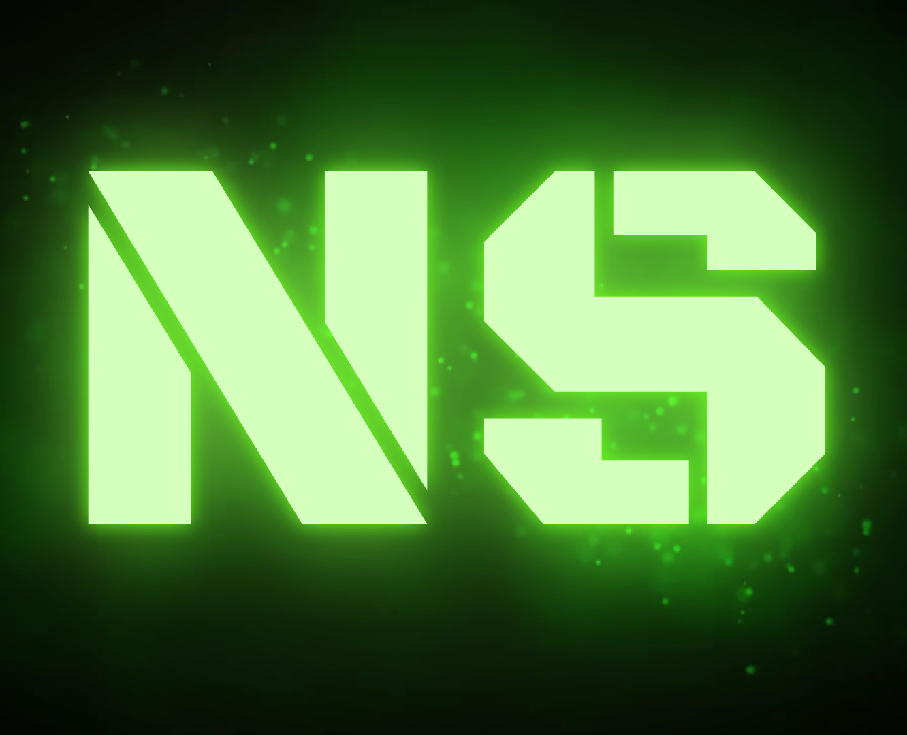
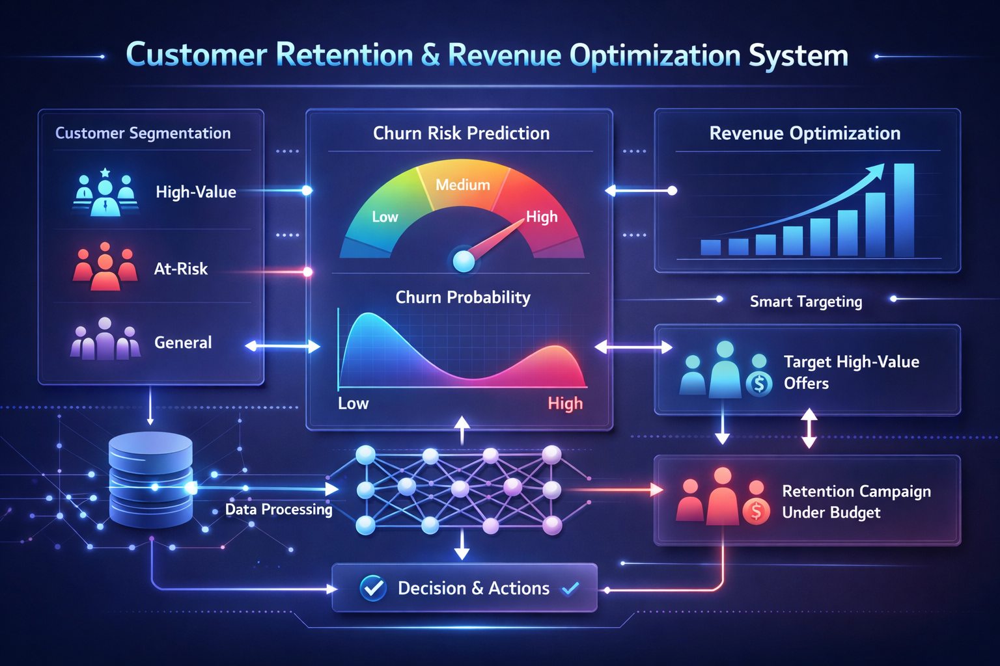
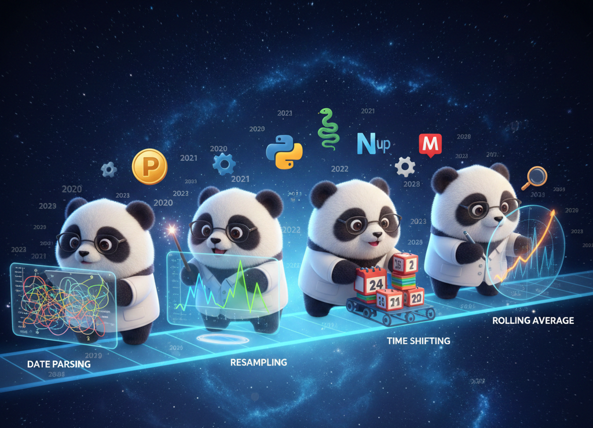
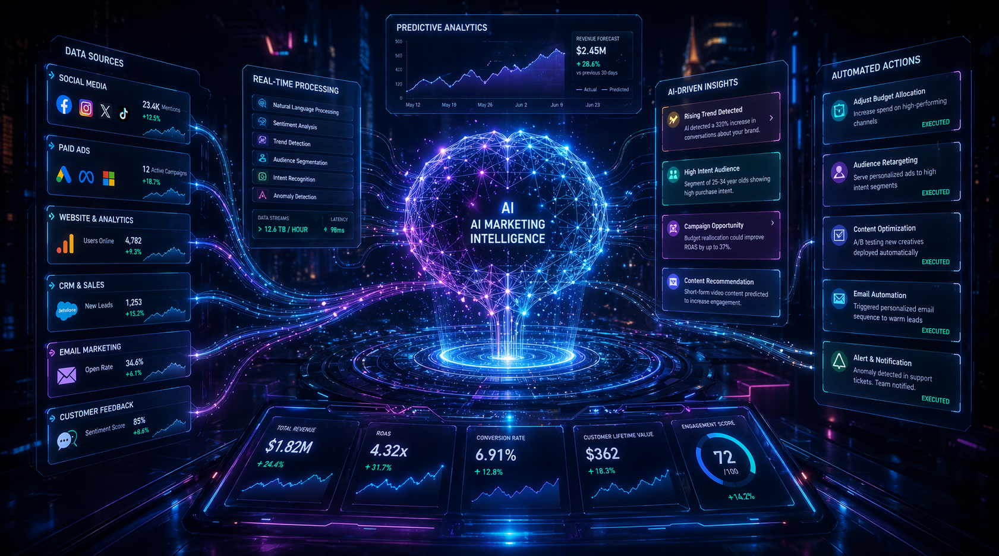
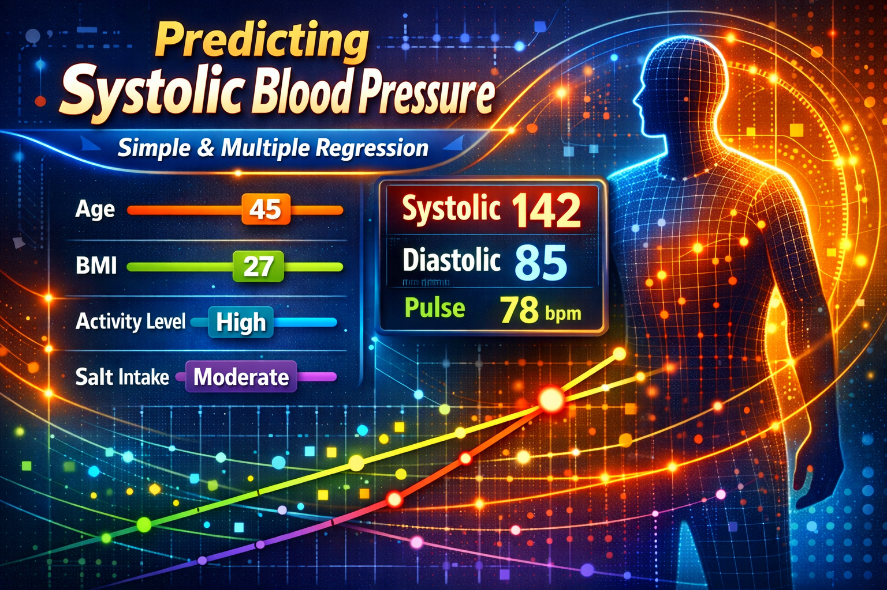

Hi, I'm Nate (short for Nibedita), a Data Scientist with a strong foundation in Mathematics. I specialize in building end-to-end data-driven systems using Python, SQL, ML, and Statistics to analyze, model, and interpret data. With a passion for problem-solving and data storytelling, I focus on transforming complex data into clear and actionable insights. I'm particularly interested in the intersection of Data Science and AI, integrating intelligent systems to support real-world decision-making. I'm constantly learning and refining my skills, working on projects that challenge me to grow and explore new opportunities.
Programming ⇰ Python SQL
Data Analysis ⇰ NumPy Pandas
Visualization ⇰ Matplotlib Seaborn
ML ⇰ Scikit-learn StatsModels SciPy
Databases ⇰ MySQL PostgreSQL
BI ⇰ Power BI Tableau Excel
Version Control ⇰ Git GitHub
Development ⇰ VS Code Jupyter Colab
Documentation ⇰ Markdown LaTeX
Web Basics ⇰ HTML CSS
Presentation ⇰ PowerPoint Canva
🎓 Bachelor of Science in Mathematics
With a strong analytical mindset shaped through my academic journey, I've developed a natural inclination toward solving data-driven problems. My degree has helped me understand the logic, structure, and patterns that form the backbone of Data Science & Machine Learning.
Built an end-to-end data science system to identify high-value customers, predict churn and purchase behavior, and optimize targeting strategies to maximize revenue under budget constraints. The project focuses on turning predictions into actionable business decisions with measurable impact. It combines data engineering, modeling, and optimization into a structured workflow that reflects real-world decision-making.
GitHub

A fully documented Time Series Analysis project built on a realistic multi-year nutrition dataset. The project progresses from dataset design and proper time handling to trend, seasonality, and variability analysis, followed by simple, interpretable forecasting. It focuses on understanding real-world time-based behavior, avoiding common pitfalls, and communicating insights clearly through visual storytelling.
GitHubA complete end-to-end data analysis project exploring Electric Vehicle adoption. Used SQL, Python, and Power BI to clean, analyze, and visualize trends in EV types, range, and policy eligibility. Delivered actionable insights on top-performing models, regional adoption, and CAFV alignment through a multi-page report and presentation.
GitHubBuilt an AI-powered system that transforms marketing campaign metrics into actionable business insights. Simulates user behavior, extracts key performance indicators, and generates strategic recommendations using LLMs with a fallback mechanism, demonstrating the last mile of analytics, turning data into decisions.
GitHub Read Article
A fully documented Regression workflow to predict Systolic Blood Pressure using Age, BMI, Activity, and Salt Intake. The project progresses from simple to multiple regression, manual β-calculation, and a final scikit-learn model. It focuses on clarity, interpretability, and comparing different modeling approaches, not just running code. Perfect as a reusable framework for Linear Regression.
GitHub Read Article
This web app calculates Body Fat %, Fat Mass (kg), and Lean Mass (kg) interactively. Built with Pandas & Streamlit!
GitHub Open Live App Read Article
Find me on: